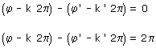
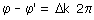

| Choques Cuando dos móviles recorren una circunferencia pueden chocar o cruzarse, la condición para que esto ocurra es que estén en el mismo sitio al mismo tiempo. Esto implica que la diferencia de sus posiciones reducidas sea 0 o 2π (Dos móviles en las posiciones 30º y -330º están en el mismo sitio) La posición reducida de cada móvil se obtiene restando a su posición angular k·2π siendo k el número de pasos por el origen. Entonces la condición de choque será una de estas dos:  Estas dos ecuaciones se pueden combinar en una sola:  Siendo Δk un entero, positivo o negativo, cuyo valor depende de la diferencia entre los pasos por el origen de cada móvil y de los sentidos de giro Método Se plantean las ecuaciones de cada movimiento Se aplican estas ecuaciones a la situación de choque cuando ambos móviles están en la misma posición reducida al mismo tiempo (Puede que se conozca algún dato más de esta situación) Se añade la condición de choque: φ - φ' = Δk·2π En el sistema de ecuaciones resultante se despeja el tiempo en función de Δk y se dan valores a Δk que hagan positivo el tiempo |